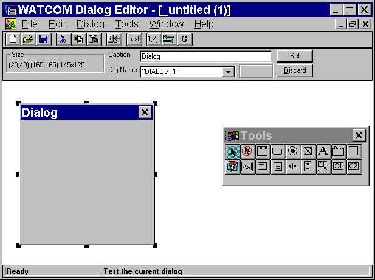
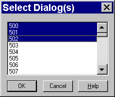
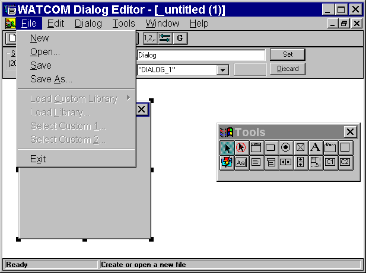
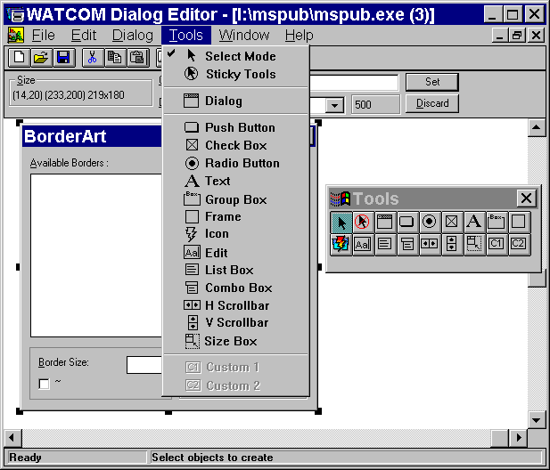
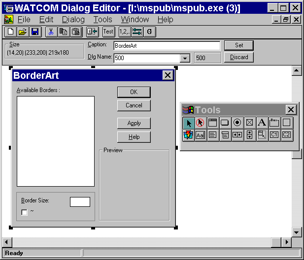
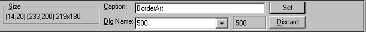
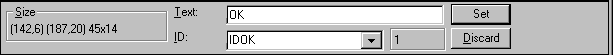
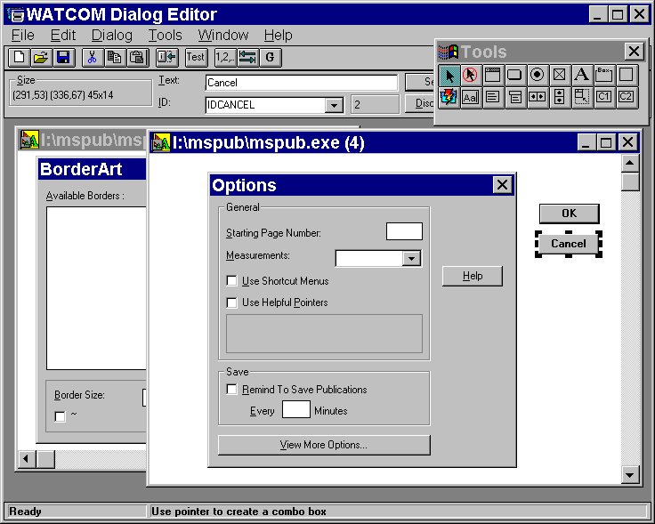
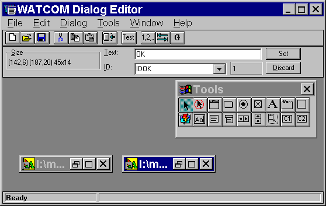

Index of Topics
- - A -
- Adding Controls to a Dialog
- C -
- Changing the Caption in a Dialog
Changing the Dialog Size
Changing the Location of a Dialog
Changing the Name of a Dialog
Controls
Creating New Dialogs
- D -
- The Dialog Editor Information Bar
The Dialog Editor Menu Bar
The Dialog Editor Toolbar
The Dialog Editor Toolbox
Dialog Editor: Save
Dialog Editor: Save As
Dialog Functions
Dialogs
- E -
- The Edit Window
- M -
- Modifying Controls in a Dialog
- O -
- The Open Watcom Dialog Editor
Opening a New Resource File with the Dialog Editor
Opening an Existing Resource File with the Dialog Editor
Opening Existing Dialogs
Ordering Controls in a Dialog
- Q -
- Quitting the Dialog Editor
- S -
- Saving a Resource File with the Dialog Editor
Saving Dialogs
Starting the Dialog Editor
- U -
- Using the Dialog Editor
Using the Dialog Editor Window
- W -
- The Workspace
The Open Watcom Dialog Editor
Dialogs are windows that contain controls such as push buttons, check boxes, list boxes, and combo boxes. Dialogs
are the principle medium for the exchanging of information between the user and the application. You include dialogs
in your application to prompt the user for information, enable the user to change settings, and allow the user to make choices.
Dialogs provide the medium through which users and your application can communicate with each other.
The Open Watcom Dialog Editor enables you to create dialogs. With this editor you can design and test your dialogs
so you can see exactly how they will look and work in your application.
The Dialog Editor allows you to create a new dialog or modify an existing dialog. When you complete the dialog
you can save it as a resource script or binary resource file. You can also save your dialog directly to an .EXE or
.DLL file if you originally loaded that dialog from one of these files.
Using the Dialog Editor
This section discusses the following topics:
- Starting the Dialog Editor
- Quitting the Dialog Editor
- Saving a Resource File with the Dialog Editor
- The Dialog Editor Menu Bar
- The Dialog Editor Toolbar
Starting the Dialog Editor
The Dialog Editor is a stand-alone application, so you can invoke it without first starting the Resource Editor.
To start the Dialog Editor, double click on the Dialog Editor icon in your Windows Program Manager. An empty Open Watcom
Dialog Editor window opens. To create a dialog resource you must first open a resource file. You can either open
a new or existing resource file.
How you proceed depends on whether you are opening a new resource file or working with an existing resource file.

Figure 1. The Dialog Editor window
Opening a New Resource File with the Dialog Editor
Choose New from the File menu of the Open Watcom Dialog Editor window.
Default dialog information appears in the editor window of the Dialog Editor window. The Dialog Editor window
is ready for you to create a new dialog resource.
Opening an Existing Resource File with the Dialog Editor
- (1)
- Double click on the Dialog Editor icon.
The Open Watcom Dialog Editor window opens.
(2)
- Choose Open from the File menu.
An Open Dialog Resource dialog appears listing all resource files.
(3)
- Double click on the resource file you want to open
or
- Click on the resource file you want to open to select it, then click on OK.
A Select Dialog(s) dialog appears listing all of the dialog resources in the selected resource file. You can select
one, several, or all of the dialog resources in the resource file. All of the dialog resources you select will open
on the editor window of the Dialog Editor window.
(4)
- Double click on the dialog you want to open.
or
- Click on the dialogs you want to open to select them, then click on OK.
The selected dialog(s) appears in the Open Watcom Dialog Editor window in the editor window.

Figure 2. You can select one or more resources to edit
Quitting the Dialog Editor
To exit the Dialog Editor, choose Exit from the File menu of the Open Watcom Dialog Editor window.
When you exit the Dialog Editor, it remembers the size and position of its main window and the position of the toolbox.
It also remembers whether the toolbar and toolbox were hidden or not. The next time you open the Dialog Editor,
it will be set up the same way you left it. The Dialog Editor also remembers the directory in which you last opened
or saved a dialog. This feature makes the Dialog Editor more convenient and efficient to use.
Saving a Resource File with the Dialog Editor
There are two functions you can use to save resource files with the Dialog Editor:
- Important:
- You can have several resource files open in the Dialog Editor window at one time. The caption bar of the currently selected
resource file appears highlighted. Only this window is affected when you choose Save or Save As from the File menu.
- Note:
- Save operations will always create a file containing the dialog script(s) (.DLG) and a resource file (.RES).
Dialog Editor: Save
Choose Save from the File menu in the Open Watcom Dialog Editor window to save any changes made to the resource
file.
After modifying individual dialog resources, you perform an update at the resource level (the Save item in the Dialog
menu). The resource file is not saved until you perform a save at the editor level as well, using the Save function.
The Dialog Editor prompts you if you attempt to exit the editor without saving changes. Choose Yes, No, or Cancel
to continue.
Dialog Editor: Save As
- (1)
- Choose Save As from the File menu in the Open Watcom Dialog Editor window to save any changes made to the resource
file.
A Save Resource dialog appears where you specify the file to which you want to save the current resource file.
(2)
- Specify the file to which you are saving by selecting an existing file or entering the name of a new file.
- Note:
- If you attempt to save the current resource file to an existing resource file, a Save Resource message box appears informing
you that the selected file already exists. Choosing Yes on this dialog overwrites the selected existing resource file
with the contents of the current resource file. Choosing No returns you to the Save Resource dialog.
(3)
- Click on OK when completed.
The dialog closes and the editor saves the resource file, returning you to the Dialog Editor window.

Figure 3. The Dialog Editor menu bar
The menu bar consists of the following five menus:
- File
- Open and save resource file, load libraries, select custom controls, work with symbols, and exit the editor
Edit
- Access the clipboard functions, align and size the dialog controls, configure the dialog, and delete dialogs
Dialog
- Test, revert, and save the dialog, create a new dialog, copy the dialog to another resource file, and set the order, tabs,
and groups for dialog controls
Tools
- Select the desired tools to use to create the dialog
Window
- Manipulate child windows, arrange icons, and hide/show the toolbox and toolbar
Help
- Access the on-line help information
To see the function of an item in the menu bar or submenus, hold the mouse button and drag the cursor over the desired
menu item. A description of the item appears in the status line at the bottom of the screen. If you do not want
to select the menu item, drag the cursor off of the menu item before releasing the mouse button.
In the Open Watcom Dialog Editor window, the toolbar appears below the menu bar when the Show Toolbar item in the Window
menu is enabled. Once enabled, the menu item changes to Hide Toolbar. To disable this feature, choose Hide Toolbar
from the File menu and the Toolbar disappears.
Figure 4. The Dialog Editor Toolbar
The following explains the function each icon performs, as well as the equivalent function in the menu bar.
- Create
- Create a new resource file. This is equivalent to the item New in the File menu.
Open
- Open an existing resource file. This is equivalent to the item Open in the File menu.
Save
- Save the current resource file. This is equivalent to the item Save in the File menu.
Cut
- Cut the selected object(s) to the clipboard. This is equivalent to the item Cut in the Edit menu.
Copy
- Copy the selected object(s) to the clipboard. This is equivalent to the item Copy in the Edit menu.
Paste
- Paste the object(s) on the clipboard to the current resource file. This is equivalent to the item Paste in the Edit
menu.
Size
- Size the selected control to the text within it. This is equivalent to the item Size to Text in the Edit menu.
Test
- Test the current dialog. This is equivalent to the item Test Mode in the Dialog menu.
Order
- Order the controls in the current dialog. This is equivalent to the item Set Order in the Dialog menu.
Set Tab
- Set tab stops in the current dialog. This is equivalent to the item Set Tabs in the Dialog menu.
Set Groups
- Set groups in the current dialog. This is equivalent to the item Set Groups in the Dialog menu.
To see the function of an item in the toolbar, position your cursor over the desired icon. A description of the
button's function appears in the status line at the bottom of the window.
The toolbox allows you to conveniently select the tool you want, without having to access it through the Tools menu.
Each toolbox button represents an option in the Tools menu. Moving the cursor over the toolbox buttons displays the
function of the button in the status bar.

Figure 5. The Dialog Editor toolbox
Using the Dialog Editor Window
The Open Watcom Dialog Editor window contains a menu bar, toolbar, toolbox, and status line. The rest of the window
is divided into three sections:
- The Information Bar
- The Edit Window
- The Workspace

Figure 6. The Dialog Editor window contains a menu bar, toolbar, workspace, and status
line.
The Information Bar is located under the toolbar. It provides information about the currently selected object you
are adding to the dialog or modifying. This object can be a control or the dialog window itself. There are three
fields in the Information Bar. The contents of two fields depends on whether the selected object is a dialog or a control.
You may press F9 to set the keyboard focus to the Information Bar. While the Information Bar has the keyboard
focus you may press ESCAPE to have the focus return to the Editor.

Figure 7. The Dialog Editor information bar
Changes made to these fields are only processed once you press ENTER or click on the Set button. Reverse uncommitted
changes by clicking on the Discard button.
- Size
- The Size field in this area contains three sets of numbers. These numbers provide information on the size and position
of the selected dialog or object in the Edit Window. The default number sequence when you create a new dialog is:
(20, 20) (115, 95) 95x75
(20, 20) indicates that the top left hand corner of the dialog is at the position 20, 20 on the Edit Window grid.
(115, 95) indicates that the bottom right hand corner of the dialog is at the position 115, 95 on the Edit Window
grid.
95x75 indicates the width and height of the dialog.
Dialogs
- Caption
- When the selected object is a dialog, this field contains the name of the dialog that you want to appear on the dialog in
the application. Any changes you make to this field are not stored until you:
- Press ENTER, or
- Select the Set button to the right of the field.
Dlg Name
- When the selected object is a dialog, this field contains the name of the dialog resource. This is the name by which
the dialog is stored in the resource file. When you create a new dialog, the Dialog Editor assigns the default name
DIALOG_# to the new dialog. You change the name of the dialog using the Dlg Name field.
- To change the dialogs name:
-
(1)
- Type the new dialog name using double quotes if the dialogs name is to be an character string.
or
- Type the symbol name (without double quotes). New symbols will automatically be created.
Controls
- Text
- When the selected object is a control, the Text field contains the text appearing in the dialog with the selected object.

Figure 8. The information bar text field
This field is not applicable for all objects. Any changes you make to this field are not stored until you:
- Press ENTER, or
- Select the Set button to the right of the field
ID
- There are two parts to the ID field. The field on the right contains the numeric value of the currently selected control.
Each control always has a numeric identifier. You may enter a symbol here ( new symbols will automatically be
created ) or a numeric identifier.
The symbol is a string used to specify the selected control. This is an alternate way to identify the control in
your source code.
The Edit Window
The edit window is the window on which you create dialogs and controls. It represents the resource file that your
dialog is a part of.

Figure 9. The Dialog Editor edit window
The edit window gives you space so you can temporarily move controls off your dialog when it gets too crowded.
For example, to rearrange controls in your dialog, you can drag them onto the edit window and then drag them back onto the
dialog in the desired order.
Although you can't see it on your screen, the edit window is an infinite grid with the origin (0,0) initially at its
top left. Dialogs are always positioned relative to the edit window. The origin is in the middle of the world
co-ordinate system, which is the reason the scroll thumbs are initially in the middle of the scroll bars.
The Workspace
The workspace is the area under the Information Bar on which you can manipulate several resource files. This area
can be compared to your desktop. For instance, if you minimize an edit window, an icon representing that edit window
appears in the workspace. The workspace provides you with an area in which to open and close edit windows.

Figure 10. The Dialog Editor workspace
Dialog Functions
This section describes the several functions you can perform with the Dialog Editor. The following tasks are included
in this section:
- Creating New Dialogs
- Opening Existing Dialogs
- Changing the Dialog Size
- Changing the Location of a Dialog
- Saving Dialogs
- Changing the Name of a Dialog
- Changing the Caption in a Dialog
- Adding Controls to a Dialog
- Modifying Controls in a Dialog
- Ordering Controls in a Dialog
Creating New Dialogs
When you open the Dialog Editor, it displays an empty dialog box in the editor window of the Dialog Editor window.
You can change the size and location of this dialog and add controls to it to meet the needs of your application. However,
if you are not happy with the changes you have made and want to delete your dialog to start over again, or if you want to
modify more than one dialog at a time, you can create another empty dialog in one of the following ways:
- (1)
- Select New from the File menu.
(2)
- Select New from the toolbar.
(3)
- Draw another dialog in the editor window with the "dialog" item from the toolbox.
An empty dialog named "Untitled" appears in the editor window. Now you can add controls to the empty dialog,
and change its size and location within the edit window.
Opening Existing Dialogs
You can open a dialog from any .RES, .EXE, or .DLL file to your edit window where you can modify it. To do this:
- (1)
- Open the file you want, in one of the following ways:
- Select Open from the file menu, or
- Select the Open button from the toolbar.
(2)
- Select the .RES, .EXE, or .DLL file that contains the dialog you want to copy.
The Open Watcom Dialog Editor Open Resource dialog appears.
(3)
- Select the resource file you want.
(4)
- Select the name of the file you want, in one of the following ways:
- Select the name and press OK, or
- Double click on the name of the file.
If there are any dialog resources in the file, the Select Dialog appears listing the names of all the dialog resources
that exist in that resource file.
- Note:
- If the file does not contain any dialog resources, the main screen appears with an empty edit window and dialog for you to
add controls and modify.
(5)
- Select one or more dialogs to place in the edit window in one of the following ways:
- Double click on the dialogs you wish to modify, or
- Select the dialogs you wish to modify and select OK.
The dialog you copied appears in the edit window of your main screen. From here you can add controls to the dialog
and modify its size and location.
Changing the Dialog Size
To modify the size of a dialog,
- (1)
- Select the dialog.
(2)
- Position the mouse above the appropriate sizing handle.
(3)
- Drag the dialog's sizing handle until the dialog is the size you want.
You will notice that the dialog size information in the Information Bar will track the size of the dialog.
Changing the Location of a Dialog
Since you will want all parts of your dialog to be visible to your users and grab their attention, you can modify the
location of your dialog relative to the parent window. To do this:
- (1)
- Position the mouse either above the dialog caption or within several pixels of the dialog's border (while remaining
in the dialog).
(2)
- Drag the dialog to the position you want in the edit window.
You will notice that the dialog size information in the Information Bar will track the location of the dialog.
Saving Dialogs
It is a good idea to save changes to your dialog as you modify it rather than wait for the Dialog Editor to prompt you
when you close your dialog or exit the Dialog Editor. There are five ways to save dialogs. The two primary ways
to save a dialog are to select one of the following from the file menu:
Selecting Save or Save As from the File menu saves the entire resource file in which your dialog resides, updating any
changes you made to your dialog in the process.
In addition, there are three other ways to save your dialog. You can choose Save, Save As, or Copy To from the
Dialog menu. Saving a dialog from the Dialog menu only saves one resource - the currently selected dialog - not the
entire resource file which typically contains numerous resources.
- Warning:
- If you choose to select Save or Save As from the dialog menu you will only be saving the current dialog and not any of the
other resources in the resource file. If you save the dialog under the same name as the resource file, you will overwrite
all the resources in that file and be left with a resource file that contains nothing more than your dialog.
Changing the Name of a Dialog
The name of a dialog is the name associated with the dialog resource when you save it to a dialog resource file.
To avoid name conflicts, (you can't have two dialog resources with the same name, in the same file) you will want
to change the name of your dialog (the editor gives you one as a default). Type in the edit field a name you want to
give your dialog or, if symbols have been loaded, you can select a symbol from the combo box. You can drop down the
combo list box and select a symbol from there.

Figure 11. The combo box is labelled "ID".
Changing the Caption in a Dialog
A dialog's caption is the text that appears in the title bar of the dialog.
You can type in the edit field of the Information Bar to change the caption's name.
Adding Controls to a Dialog
Select a tool that will allow you to create controls by selecting an item from the Tools menu or from the toolbox.
There are two ways in which controls may be drawn in the dialog.
-
- Click the left mouse button at the position where you would like the top left corner of the control to be. The
control will be created in its default size.
or
- Press the left mouse button and drag out a rectangle. Release the left mouse button.
The tool box goes back to select mode when you draw a control (the current tool becomes the select tool).
To draw more than one of the same types of controls without having to choose the control from the toolbar or menu
every time, choose the sticky tool which causes the tool to stay down.
Modifying Controls in a Dialog
Once you have created controls for your dialog you can modify the controls as follows:
- (1)
- Double-click the control.
or
- Select the control and Press ENTER.
A Style dialog box appears.
Once in the Dialog editor, you can define your dialog box. You can also add, change, group, reorder, move, resize,
ore delete dialog controls so that your dialog box functions the way you want it to.
Ordering Controls in a Dialog
There is an ordering associated with the controls of a dialog. This ordering is commonly referred to as the "tab
order" and controls which dialog control is highlighted next when you press the TAB or cursor keys. As you add
controls to a dialog, they are added to the end of the list.
The Dialog editor allows you to change this ordering using a simple "point-and-click" technique. To
do this:
- (1)
- Select the dialog
(2)
- Select Set Order from the Dialog Menu dialog
or
- Press the Set Order button on the toolbar
All of the controls in the dialog now have a button at their top-left corner indicating their current position.
(3)
- Click the dialog controls in order until the ordering is what you would like.
(4)
- Select Set Order from the Dialog Menu dialog
or
- Press the Set Order button on the toolbar
Reselecting Set Order will terminate the ordering session and record any changes made.
As you click the dialog controls you will notice two things. First, the buttons at the dialog controls top-left
take on a "depressed" look. This indicates a button you have already clicked. Second, the unselected
or unclicked buttons will reorder themselves to reflect any changes you have made so far. This will allow you terminate
the ordering session without having to click all of the dialogs controls.
Clicking on a dialog control that is in the "depressed" or selected state will undo the new ordering you
have given it and it will go back to its original position. If a "depressed" dialog control already has its
original position then it finds the first available position. This feature is handy if you make a mistake and would
like to perform a quick fix.
There may be a point in the ordering process where you decide to start over from the beginning. Instead of clicking
over all the dialog controls you have previously clicked or leaving and then re-entering the Set Order mode you may simply
double click the dialog control you wish to be first. This will undo all that you have done and make the selected dialog
control the first one.
You may run into a situation where the first n dialog controls are correctly ordered but subsequent one are not.
Before you begin to click through the first n dialog controls note that there is a better way. Simply shift-click the
n'th control to accept the current ordering up to that point and proceed.